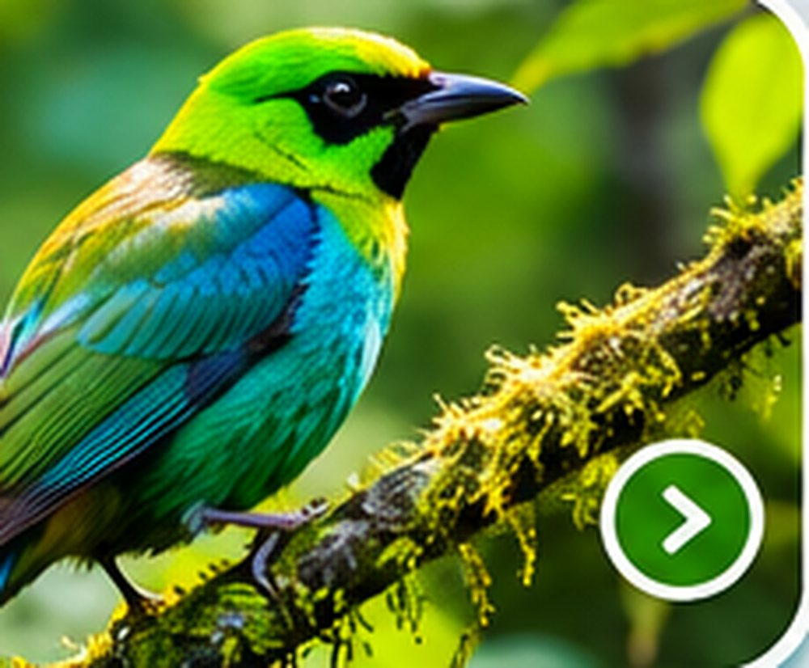

Gallito de roca andino · Rupicola peruvianus
Ave emblemática de plumaje naranja intenso.
Descubre la diversidad de aves de los bosques andinos y del Chocó biogeográfico.
← Volver al inicioInformación para conocer el territorio con respeto y apoyar a sus comunidades.

Ave emblemática de plumaje naranja intenso.
Especie endémica de Colombia, asociada a bosques húmedos.
Ave característica de los bosques húmedos del Chocó.
Ave de gran tamaño y aspecto singular.
Reconocible por su cola larga.
Diversas especies visitan flores de los bosques andinos.